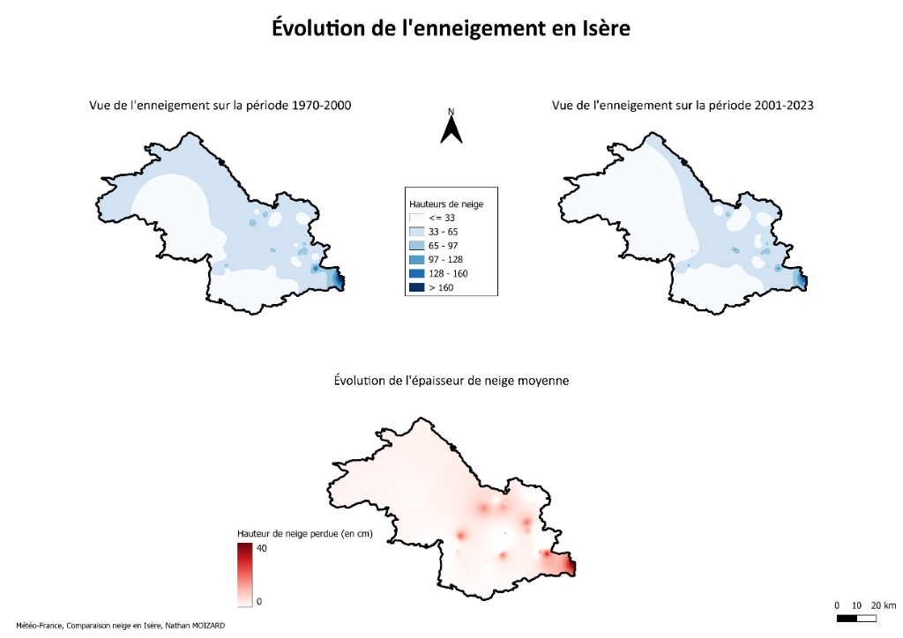

Présentation du projet
Type de projet
Projets académiques et personnels (BUT Science des Données)
Objectifs :
Développer des applications décisionnelles géographiques dynamiques (R Shiny) et réaliser des analyses de télédétection spatialisées (QGIS).
Livrables
- Dashboard interactif R Shiny de suivi spatial
- Dashboard interactif R Shiny d'analyse olympique
- Couches géographiques et analyses d'enneigement sous QGIS
Outils principaux
RStudio: Packages Shiny, Shinydashboard, Leaflet, Plotly, Dplyr
QGIS: Outils rasters, calculatrice de champs, symbologies
Détails des Réalisations
🛰️ Application R Shiny : Suivi de l'ISS en Temps Réel

Description : Cette application permet de cartographier la position de la Station Spatiale Internationale (ISS) en temps réel avec des appels API toutes les 10 secondes. Elle intègre le calcul de la ligne jour/nuit (terminator) et le filtrage dynamique des bases de lancements spaciaux mondiaux.
🏔️ Étude Cartographique QGIS : Évolution de l'enneigement en Isère

Description : Analyse spatiale de la couverture neigeuse en Isère sur deux périodes climatiques clés (1970-2000 vs. 2001-2023). La différence de rasters met en évidence une baisse significative de l'épaisseur moyenne de neige et du nombre de jours d'enneigement.
🏅 Application R Shiny : Carte des Médailles Olympiques

Description : Tableau de bord interactif d'analyse historique des médailles olympiques par pays. Il comprend des filtres par continent, pays, saison (été/hiver) et sport, couplés à une représentation choroplèthe dynamique.
Bilan du Projet
Ce projet regroupe mes travaux sur les Systèmes d'Information Géographique (SIG) et la data-visualisation interactive. Il démontre ma capacité à croiser des données géospatiales complexes (formats vecteurs, rasters, géoréférencement) avec des interfaces web réactives pour l'aide à la décision.
La maîtrise de packages spécialisés sous R (Leaflet) couplée à l'analyse sous QGIS me permet de répondre à des problématiques variées de suivi d'actifs en mouvement, de diagnostic environnemental territorial ou de datavisualisation thématique.